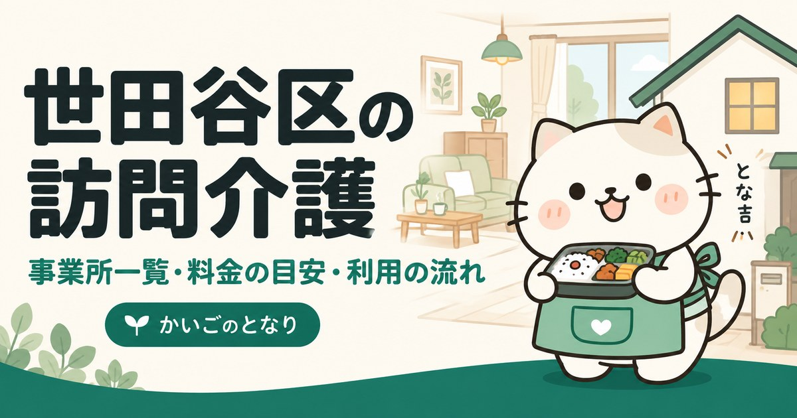

世田谷区の訪問介護事業所一覧｜料金の目安と選び方
事業所一覧へ（237件）
東京都世田谷区で訪問介護（ホームヘルプ）を探している方へ。区内にある事業所237件すべてを電話番号・地図つきで掲載し、あわせて自己負担額の目安、ヘルパーに頼めること・頼めないこと、相談から利用開始までの流れをまとめました。はじめて介護保険を使う方は、まず「あんしんすこやかセンター」への相談から始めるのが近道です。
目次
数字で見る世田谷区の訪問介護
- 区内の事業所
- 237件23区中1位（多い順）
- 65歳以上1万人あたり
- 12.3件23区中8位（多い順）
- 高齢化率
- 20.7%23区中10位（高い順）
- 要介護・要支援の認定
- 43,227人65歳以上の22.2%
事業所数は東京都福祉局の指定事業所一覧（2026年9月1日時点）、人口は住民基本台帳（2026年1月1日時点）から計算。区の統計をくわしく見る
世田谷区で訪問介護を探すとき、最初に押さえること
世田谷区には訪問介護事業所が237件あります。相談窓口であるあんしんすこやかセンターは区内に28か所あり、担当する地区が決まっています。絞り込みの軸は距離ではなく、希望する曜日・時間帯にヘルパーを確保できるかです。
世田谷区では地域包括支援センターを「あんしんすこやかセンター」と呼び、区内各地に設置しています。要介護認定の申請方法、ケアマネジャー探し、事業所の選び方まで無料で相談できます。担当の窓口はお住まいの町名で決まりますので、連絡前にご自宅の町域を確認しておくと話が早く進みます。
はじめて介護保険を使う方は、要介護認定の申請から利用開始までの流れを先にご覧ください。申請から実際にサービスが始まるまで、1か月から1か月半かかります。
世田谷区の訪問介護事業所一覧
世田谷区内で指定を受けている訪問介護事業所237件をすべて掲載しています（2026年9月時点）。最新の指定状況は厚生労働省「介護サービス情報公表システム」でも確認できます。掲載順は事業所の優劣を示すものではありません。
237 / 237件を表示
「場所」は事務所の所在地です。訪問サービスは近くの町からも来てもらえます。
提供曜日の記載がない23件は、曜日で絞ると表示されません。
6ケアリッツ田園調布
玉川田園調布1-14-15田園調布フォレストヒルズ105株式会社ケアリッツ・アンド・パートナーズ
事業所番号 1371110709
7訪問介護ナイスケア 世田谷
駒沢3-7-20グリーンプラザ202号室株式会社ナイスケア
事業所番号 1371200484
9ニチイケアセンター烏山
北烏山6-1-16株式会社ニチイ学館
事業所番号 1371200716
10ヘルパーサービス和知
代沢5-7-3有限会社ヘルパーサービス和知
事業所番号 1371200815
11有限会社 玉川ケアサービス
玉川台1-13-14用賀武井ビル301、302号
事業所番号 1371200872
12ツクイ世田谷明大前
松原1-39-17レインボー松原1階株式会社ツクイ
事業所番号 1371200930
13成城訪問介護ステーション
成城6-13-17社会福祉法人古木会
事業所番号 1371201045
14ほほえみの木々
代沢4-28-12KSハイム1階株式会社生・活・計・画
事業所番号 1371201094
15透光介護支援センター
世田谷1-36-12ルパックス透光株式会社
事業所番号 1371201102
16世田谷ホームヘルプサービス
世田谷1-23-2 DS1ビル1階社会福祉法人世田谷区社会福祉事業団
事業所番号 1371201326
17ニチイケアセンター三軒茶屋
三宿1-14-2Ogura BLDG 3F株式会社ニチイ学館
事業所番号 1371201573
18やさしい手 三軒茶屋訪問介護事業所
太子堂1-12-39三軒茶屋ビル2F株式会社やさしい手
事業所番号 1371201797
20ホームヘルプサービス ソラスト世田谷
桜新町2-31-5桜新町二丁目ビル3F株式会社ソラスト
事業所番号 1371202282
21ホームヘルパーステーションきたざわ苑
北沢5-24-18社会福祉法人正吉福祉会
事業所番号 1371202290
22東京高齢協世田谷訪問介護青い空
世田谷3-24-15第一師岡ビル103生活協同組合・東京高齢協
事業所番号 1371202365
23愛の羽・まつばら
赤堤1-8-19第一居成ビル2F株式会社愛の羽
事業所番号 1371202449
25やさしい手祖師谷訪問介護事業所
祖師谷3-36-30株式会社やさしい手
事業所番号 1371202571
28給田 ヘルパーステーション
給田5-9-5社会福祉法人敬心福祉会
事業所番号 1371202977
29ケアステーション連
駒沢1-5-13ビラ・アペックス駒沢 7階社会福祉法人世田谷ボランティア協会
事業所番号 1371203033
30喜多見ホームヘルパーセンター
喜多見七丁目20番26号社会福祉法人南山会
事業所番号 1371203181
32もみの木ケアセンター
三宿2-28-21有限会社 ピュアライフ
事業所番号 1371203264
33株式会社 あかね
三軒茶屋2-11-20サンタワーズD棟8階
事業所番号 1371203272
34ケアメイト桜新町訪問介護事業所
桜新町2-20-16GATO D．M桜新町1F株式会社ケアメイト
事業所番号 1371203363
35ＮＰＯ・世田谷ゆりの木
船橋1-1-2山﨑ビル201号室特定非営利活動法人アクト世田谷たすけあいワーカーズゆりの木
事業所番号 1371203454
37烏山 ホームヘルプサービス
粕谷2-23-1社会福祉法人世田谷区社会福祉事業団
事業所番号 1371203504
38お天気介護サービス
宮坂二丁目26番26号宮坂ハイム501有限会社幸せ在宅計画社
事業所番号 1371203595
39ケアパートナー上町・ヘルパーステーション
世田谷1-22-12 グランデ世田谷2階ケアパートナー株式会社
事業所番号 1371203785
40ホームヘルプサービス ソラスト烏山
南烏山6-6-5安藤ビル1階株式会社ソラスト
事業所番号 1371203850
42やさしい手用賀訪問介護事業所
用賀2-31-7 イイダアネックスⅠ 2階A株式会社やさしい手
事業所番号 1371204023
43やさしい手下高井戸訪問介護事業所
松原3-30-15シャイロビル2F株式会社やさしい手
事業所番号 1371204031
44セコムケアステーション千歳烏山
南烏山5-5-9セコム医療システム株式会社
事業所番号 1371204064
45ケア２１ 烏山
粕谷3-15-2メゾネット田中株式会社ケア２１
事業所番号 1371204247
46タウンライフケア桜上水
桜上水1-20-12シャトレ経堂202号室有限会社タウンライフケア
事業所番号 1371204346
47有限会社 しんあいケアセンターせたがや
上馬5-19-16リバージュ新川201有限会社しんあいケアセンター
事業所番号 1371204387
48ライフサポートやすらぎ
豪徳寺1-50-16ライフサポートやすらぎ有限会社
事業所番号 1371204585
49さわやか介護センター
八幡山3-10-14 てらーるはうす101有限会社てらーる
事業所番号 1371204627
50ニチイケアセンター 用賀
用賀3-9-12株式会社ニチイ学館
事業所番号 1371205012
54テルウェル東日本 西世田谷介護センタ
祖師谷6-19-18塚戸医療館2階テルウェル東日本株式会社
事業所番号 1371205384
55ケアステーションたね
赤堤5-32-4共栄荘101有限会社ケアステーションたね
事業所番号 1371205467
57ヘルパーステーションさくら
桜丘4-7-17社会福祉法人すこやか福祉会
事業所番号 1371205772
58サニー・けあサポート
喜多見8-16-12-1F有限会社サニーインタラクティブ
事業所番号 1371205939
59三宿訪問介護事業所
三宿1-8-10山元ビル2階社会福祉法人こうれいきょう
事業所番号 1371206259
60タンドル南烏山
南烏山6-4-21SJKビル2F株式会社タンドル
事業所番号 1371206267
62株式会社 亀右衛門
三軒茶屋1-35-1三軒茶屋ゴールデンビル203
事業所番号 1371206531
64セントケア世田谷
三軒茶屋2-14-8 ファションビル第2 2階セントケア東京株式会社
事業所番号 1371206762
67学研ココファン世田谷ヘルパーセンター
代田5-33-16カーサ・ノルド1205株式会社学研ココファン
事業所番号 1371207588
68訪問介護ステーション ＳＯＲＡ
駒沢3-28-11アーバン駒沢1F株式会社ＳＯＲＡ
事業所番号 1371207620
69紙ふうせん豪徳寺訪問介護事業所
梅丘1-13-4朝日プラザ梅ヶ丘202株式会社いちしんウエルフェア
事業所番号 1371207711
70チームケアめぐみ
喜多見3-14-11 さがらコーポ102号株式会社クリスタルカンパニー
事業所番号 1371207737
72ＮＰＯわかば
三軒茶屋2-49-6-104特定非営利活動法人ソーシャルケア清和会
事業所番号 1371208032
73株式会社はなケア 用賀サービスセンター
用賀4-33-17株式会社はなケア
事業所番号 1371208255
74ヘルパーステーション ピースウイッシュ
上祖師谷1-27-17-103株式会社ピースウイッシュ
事業所番号 1371208362
75ヘルパーステーションかたらい成城
成城4-3-23特定非営利活動法人語らいの家
事業所番号 1371208388
76マルク・ケアサポート訪問介護事業所
三軒茶屋1-35-20平原ビル2階株式会社マルク・ケアサポート
事業所番号 1371208685
77ヘルパーステーションにじのこ
南烏山6-3-9ミール千歳烏山603特定非営利活動法人にじのこ
事業所番号 1371208776
81ノースポールのケア介護
駒沢1-13-12駒沢タカシビル505号室株式会社ノースポールのケア介護
事業所番号 1371208974
84ケアパートナー駒沢・ヘルパーステーション
駒沢4-23-18加瀬ビル166-3階ケアパートナー株式会社
事業所番号 1371209311
85ｔｅａｍ ｓｈｉｅｎ
豪徳寺1-21-5ヴィラ・ゴートク1-E一般社団法人ｔｅａｍｓｈｉｅｎ
事業所番号 1371209469
86愛の羽・いたわり中央
船橋1-10-8植松ビル株式会社愛の羽
事業所番号 1371209576
87ケアリッツ下北沢
代沢5-19-8濱口ビルB1F株式会社ケアリッツ・アンド・パートナーズ
事業所番号 1371209592
88アイ・ケアステーション成城
成城2-5-6 1階株式会社Ｎ・システム
事業所番号 1371210145
89ウェリナ下馬ステーション
下馬6-12-15 2F株式会社ウェリナ
事業所番号 1371210210
90ケアパートナーエンジェルケアサービス
松原6-3-10ケアパートナー株式会社
事業所番号 1371210319
92株式会社 スマイル・ケア
三軒茶屋1-5-9メゾンSAKAEアベニュー三軒茶屋303号
事業所番号 1371210590
93アイネケアセンター
松原2-21-2金子ハウス101株式会社Ａｉｎｅ
事業所番号 1371210608
94フローラ用賀
瀬田2-23-11ビスタリアハイツ101株式会社ライフデザイン・フローラ
事業所番号 1371210830
95ベネッセ介護センター祖師谷
砧6-9-3ハーモニーハイツ205株式会社ベネッセスタイルケア
事業所番号 1371211036
96ヘルパーステーション スマイライフ 経堂
経堂2-4-8アンティロープ経堂B号室株式会社スマイライフ
事業所番号 1371211093
97ベネッセ介護センター等々力
上野毛2-8-12川口ビル1F株式会社ベネッセスタイルケア
事業所番号 1371211119
100訪問介護事業所二子のわたし
鎌田3-16-6社会福祉法人大三島育徳会
事業所番号 1371211408
101フットワークケア
松原1-50-15 305合同会社フットワーク
事業所番号 1371211424
102ドレミハウス世田谷ヘルパーステーション
給田4-20-8ガウディ11ドレミハウス株式会社
事業所番号 1371211879
103ぺんぎん介護
宮坂2-15-4鈴木ビル2A株式会社ヘルシコ
事業所番号 1371211952
104やさしい手 千歳烏山訪問介護事業所
南烏山6-10-9コーシャハイム千歳烏山9号棟 1階株式会社やさしい手
事業所番号 1371212067
105サン・サイドケアサポート
玉川田園調布2-5-6東光ビルB1株式会社サン・サイド
事業所番号 1371212083
106ヘルパーステーション モア 世田谷瀬田
瀬田2-5-8ツノイハイム205株式会社ｍｏｒｅ
事業所番号 1371212091
107健康生活訪問センター
祖師谷1-35-4-2階労働者協同組合健康生活サポートセンター
事業所番号 1371212190
108ケアリッツ祖師谷
祖師谷4-24-14PAL祖師谷Ⅱ1階株式会社ケアリッツ・アンド・パートナーズ
事業所番号 1371212265
109けあサポート ｗｉｔｈ 優
松原6-34-7萩原コート203株式会社Ｗｉｔｈ ｙｏｕ
事業所番号 1371212471
110フローラ千歳烏山
南烏山6-38-10-202株式会社アール・アソシエイツ
事業所番号 1371212554
111クウの翼ケア
等々力4-4-1喜島ビル1F合同会社クウの翼
事業所番号 1371212679
112よつば訪問介護 下北沢
代田5-35-29-207株式会社グッドライフよつば
事業所番号 1371212729
114ケアパートナー祖師谷大蔵・ヘルパーステーション
砧6-30-4YMビル3Fケアパートナー株式会社
事業所番号 1371212968
116ヘルパーステーションとまり木
世田谷3-5-19特定非営利活動法人たつなみ会
事業所番号 1371213099
117ヘルパーステーション モア 世田谷用賀
玉川台2-17-2株式会社ｍｏｒｅ
事業所番号 1371213297
119キラッと烏山訪問介護事業所
南烏山6-34-15ハイムピア6-103株式会社Ｐｒｏｆｅｓｓｉｏｎａｌ
事業所番号 1371213560
120東京海上日動みずたま介護ＳＴ明大前
松原2-42-7YS第二ビル3階東京海上日動ベターライフサービス株式会社
事業所番号 1371213693
121東京海上日動みずたま介護ＳＴ自由が丘
奥沢7-1-3自由が丘ランディックスビルⅡ2階東京海上日動ベターライフサービス株式会社
事業所番号 1371213719
123エブリンクケア
松原3-33-2ダジュール松原103株式会社リベア
事業所番号 1371213743
124やさしい手 東松原訪問介護事業所
松原5-26-15株式会社やさしい手
事業所番号 1371213776
125チークケア 世田谷
三軒茶屋1-2-23メゾン周1F株式会社セブンデイズ
事業所番号 1371213784
126ニチイケアセンター祖師谷
祖師谷1-2-15株式会社ニチイ学館
事業所番号 1371213800
127ニチイケアセンター豪徳寺
宮坂2-27-26株式会社ニチイ学館
事業所番号 1371213842
128あけぼの介護センター経堂
経堂1-27-13ディアコート経堂103ケアゲート株式会社
事業所番号 1371213933
129ケアリッツ用賀
用賀4-31-19ハイツクワハラ102株式会社ケアリッツ・アンド・パートナーズ
事業所番号 1371214030
130介護ステーション グリーンヒル
奥沢1-16-18センチュリーオークス105号有限会社グリーン・ヒル
事業所番号 1371214089
131愛・訪問介護ステーション上野毛
上野毛1-21-6フラッツK 1F株式会社愛総合福祉
事業所番号 1371214097
132愛・訪問介護ステーション経堂
経堂1-26-8株式会社愛総合福祉
事業所番号 1371214113
133東京海上日動みずたま介護ＳＴ三軒茶屋
代沢4-17-18 NのS 1階東京海上日動ベターライフサービス株式会社
事業所番号 1371214147
134Ｅａｃｈ Ｃａｒｅ 世田谷
若林4-17-3合同会社Ｅａｃｈ Ｃａｒｅ世田谷
事業所番号 1371214204
136桜新町総合支援サービス
新町2-7-2ヒノトビル3階ケアパートナー株式会社
事業所番号 1371214550
137フローラ二子玉川
玉川3-40-26グレイスコート107株式会社ライフデザイン・フローラ
事業所番号 1371214600
138Ｓｗｅｅｔ ｍｅｄｉｃａｌ ｓｕｐｐｏｒｔ訪問介護事業所
羽根木2-37-2-302号Ｓｗｅｅｔ Ｖｉｌｌａ株式会社
事業所番号 1371214618
139梅ヶ丘総合支援サービス
松原6-3-10寺島ビル83 1階 北側事業所ケアパートナー株式会社
事業所番号 1371214626
140ホームケア世田谷
上用賀1-22-23株式会社東急イーライフデザイン
事業所番号 1371214675
141ＳＯＭＰＯケア 用賀 訪問介護
用賀3-6-3ＳＯＭＰＯケア株式会社
事業所番号 1371214881
142ＳＯＭＰＯケア 世田谷 訪問介護
三軒茶屋1-37-8ワコーレ三軒茶屋64ビル10FＳＯＭＰＯケア株式会社
事業所番号 1371214907
143ファインケアステーション千歳船橋
船橋1-9-16株式会社ファインケア
事業所番号 1371214964
145ヘルパーステーション梅ヶ丘
松原6-37-1一般財団法人脳神経疾患研究所
事業所番号 1371215094
147愛の羽・烏山
南烏山6-7-19グレイスビル302株式会社愛の羽
事業所番号 1371215136
148ＳＯＭＰＯケア 成城 訪問介護
成城6-18-3小島ハウスA号ＳＯＭＰＯケア株式会社
事業所番号 1371215227
149紙ふうせん祖師谷訪問介護事業所
千歳台2-13-8千歳台マンション202株式会社いちしんウエルフェア
事業所番号 1371215391
150Ｉ．Ｄｏケアサービス
船橋7-12-7株式会社ＥＩＳＥＩ
事業所番号 1371215409
152ケアリッツ千歳烏山
南烏山5-35-8第2鴨志田ビル 201号室株式会社ケアリッツ・アンド・パートナーズ
事業所番号 1371215458
153おおきなき明大前
松原2-38-9明大前グランドハイツ1F 8号株式会社日本エルダリーケアサービス
事業所番号 1371215490
154おおきなき世田谷
三軒茶屋1-35-3スプラウトビル2階株式会社日本エルダリーケアサービス
事業所番号 1371215508
158ひばり訪問介護ステーション久我山
北烏山2-2-19シマダリビングパートナーズ株式会社
事業所番号 1371215763
159ケアリッツ三軒茶屋
三軒茶屋2-41-6ブラウンズ大場1階株式会社ケアリッツ・アンド・パートナーズ
事業所番号 1371215771
160訪問介護ファミリー・ホスピス二子玉川
玉川3-39-9ファミリー・ホスピス株式会社
事業所番号 1371215813
161ニチイケアセンター世田谷松原
赤堤4-36-19関口ビル 中1階株式会社ニチイ学館
事業所番号 1371215839
162ケアリッツ経堂
桜1-63-19グリーンネスト1階株式会社ケアリッツ・アンド・パートナーズ
事業所番号 1371215847
163ケアリッツ二子玉川
玉川2-11-10玉川フラット1階株式会社ケアリッツ・アンド・パートナーズ
事業所番号 1371215896
164ヘルパーステーション モア 世田谷千歳船橋
桜丘5-28-19メゾン桜丘303号室株式会社ｍｏｒｅ
事業所番号 1371215912
165桜十字訪問介護ステーション世田谷八幡山
八幡山3-12-21株式会社桜十字
事業所番号 1371215946
167ケアリッツ等々力
等々力2-8-8ルネサンス壱番館201株式会社ケアリッツ・アンド・パートナーズ
事業所番号 1371215979
170ヘルパーステーション ダッシュ
祖師谷6-1-5アーバンコート祖師谷202一般社団法人ダッシュ
事業所番号 1371216076
172ひばり訪問介護ステーション砧公園
大蔵1-6-18シマダリビングパートナーズ株式会社
事業所番号 1371216217
173ハートケアセンター千歳船橋
船橋1-54-10セラータクト101株式会社サンバランス
事業所番号 1371216225
174ケア２１ 砧
砧5-17-14プランドール砧101号株式会社ケア２１
事業所番号 1371216266
175ＡＩＥＮケアサービス
粕谷3-21-18ＡＩＥＮ合同会社
事業所番号 1371216282
177愛・訪問介護ステーション若林
若林1-18-1ウエストハイツ根岸5階501号室株式会社愛総合福祉
事業所番号 1371216407
178やさしい手太子堂訪問介護事業所
太子堂3-38-20株式会社やさしい手
事業所番号 1371216456
179ケアリッツ成城
成城2-29-5関山マンション102株式会社ケアリッツ・アンド・パートナーズ
事業所番号 1371216472
182ヘルパーステーション モア 世田谷成城
成城9-5-17グリーンシティ成城203株式会社ｍｏｒｅ
事業所番号 1371216514
183ケアリッツ明大前
松原2-8-20エレガンスアート101株式会社ケアリッツ・アンド・パートナーズ
事業所番号 1371216522
184青藍会在宅医療支援センターハートハウス成城
成城2-34-1成城小泉ビルⅠ 201号室社会福祉法人青藍会
事業所番号 1371216563
185ヘルパーステーション樫の木
松原6-43-17ソーワ福祉ビル3階B社会福祉法人せたがや樫の木会
事業所番号 1371216571
188訪問介護アブリル
太子堂5-21-2リフィオ三軒茶屋1階 1-Aアブリル合同会社
事業所番号 1371216720
189びおとーぷ
上馬4-2-9上馬マンション608号ＢＩＯＴＯＰＥ合同会社
事業所番号 1371216753
190リオークケアサービス
桜3-16-7ドウェルフジ303株式会社サンタイヨウ
事業所番号 1371216779
193ねこの手訪問介護千歳烏山
上祖師谷2-28-3第二佐益ハイツ203ＷｈｉｔｅＨａｗｋｓ合同会社
事業所番号 1371216910
194じりつのいえ
豪徳寺1-41-6特定非営利活動法人自立の家
事業所番号 1371216936
195こよみケアきぬた
祖師谷4-24-16渡辺ビル201合同会社こよみ
事業所番号 1371216977
196あいケアサービス
世田谷3-17-15-102合同会社明元
事業所番号 1371217009
197アルテミス ケア
千歳台4-26-2芦花公園スカイハイツ603アルテミス・アポロン株式会社
事業所番号 1371217058
198サンウェルズ用賀ヘルパーステーション
瀬田5-33-22株式会社サンウェルズ
事業所番号 1371217074
199ケアリッツ駒沢大学
駒沢2-18-4福々駒沢マンション302株式会社ケアリッツ・アンド・パートナーズ
事業所番号 1371217090
201ケアリッツ桜上水
桜上水4-17-4大洋コート201株式会社ケアリッツ・アンド・パートナーズ
事業所番号 1371217124
202訪問介護事業所きずな世田谷店
松原2-34-11-201ＹＭＭ合同会社
事業所番号 1371217132
203セントケアＤＸ明大前
松原2-20-10プラティーク明大前302号室セントケアＤＸ株式会社
事業所番号 1371217181
204ヒューマンライフケア烏山の輪
南烏山5-36-9ピア烏山 2階203号室ヒューマンライフケア株式会社
事業所番号 1371217199
205ヒューマンライフケア代田橋の輪
大原2-17-6ステーションプラザ代田橋201ヒューマンライフケア株式会社
事業所番号 1371217207
206ひばり訪問介護ステーション千歳烏山
北烏山3-14-19シマダリビングパートナーズ株式会社
事業所番号 1371217231
207ヘルパーステーション モア世田谷経堂
赤堤3-34-22ウエスト経堂ハイマンション112株式会社ｍｏｒｅ
事業所番号 1371217314
209Ａ－Ｓｍｉｌｅ下北沢
北沢2-10-15下北沢ハイタウン301株式会社アカリエ
事業所番号 1371217413
210ヘルパーステーション モア世田谷喜多見
喜多見8-7-3ボヌール4F株式会社ｍｏｒｅ
事業所番号 1371217488
212イコール世田谷ヘルパーステーション
世田谷4-1-13株式会社イコール
事業所番号 1371217553
213ハッピースクエア
北沢5-22-5タナタニ荘201号室株式会社ハッピースクエア
事業所番号 1371217595
215みかみ介護支援センター
上馬4-11-17アルス上馬101号室有限会社三上
事業所番号 1371217611
216ＷＡＳＳＵＰ
三軒茶屋1-36-6三茶林ビル203特定非営利活動法人Ｕｂｄｏｂｅ
事業所番号 1371217686
217ＴｏＡ訪問介護
八幡山3-10-10明翠荘101株式会社ＹｕｒｉＹｕｉ
事業所番号 1371217702
218株式会社リリー・アップ
上馬1-4-13第13菊池ビル3階
事業所番号 1371217736
219＠コレモ訪問介護
上馬1-33-16小川ハイツ301株式会社Ｄ．ｐｏｄｓ
事業所番号 1371217744
221ユースタイルケア 多摩川 重度訪問介護
上野毛1-14-1上野毛ステーション ヒルズⅡ301ユースタイルラボラトリー株式会社
事業所番号 1371217967
224ろーたすけあ・サポート
三軒茶屋1-40-14太子堂ハイム203号室ａｄａｍａｙｚ株式会社
事業所番号 1371218064
225ケアリッツ南祖師谷
砧3-28-18清水ハイツ102株式会社ケアリッツ・アンド・パートナーズ
事業所番号 1371218072
226青藍会在宅医療支援センター二子玉川 ヘルパーステーション
玉川4-11-7ピア二子玉川1階社会福祉法人青藍会
事業所番号 1371218098
227青藍会在宅医療支援センター祖師谷 ヘルパーステーション
祖師谷3-7-9AYビル1階社会福祉法人青藍会
事業所番号 1371218106
228ベネッセ介護センター経堂
経堂2-17-2 パティオ経堂1F株式会社ベネッセスタイルケア
事業所番号 1371300813
229ホットジョブ さくら・すたっふ
北沢1-23-12株式会社ホットジョブ
事業所番号 1371301068
236ファミケア
経堂2-13-16DreaM-G 101株式会社セカンドファミリー
事業所番号 1374202263
237ヘルパーステーション 「あい」
喜多見8-15-35K．田中ビル307株式会社福祉ステーションあい
事業所番号 1374500484
条件に合う事業所はありません。条件を1つ外してみてください。
上記237件は、2026-09-21に世田谷区および各事業者の公表情報で確認した内容です。営業時間・対応エリア・空き状況は変動しますので、連絡の前に必ず公式情報をご確認ください。掲載内容の訂正・削除は、お問い合わせからご依頼いただければ理由の説明なしで削除します。
掲載237事業所の内訳
掲載している237件を町域別に見ると、多いのは松原（17件）、南烏山（15件）、三軒茶屋（13件）です。運営法人は営利法人が208件で最も多くなっています。日曜日もサービスを提供しているのは、曜日が分かる214件のうち169件（79％）で、23区のなかでは15番目の割合になります。
所在町域
訪問介護は、事業所から車や自転車で行ける範囲が実質的な対応エリアになります。世田谷区内は59の町域に分かれており、
町域ごとの事業所名を見る（52町域）
| 町域 | 掲載事業所 |
|---|---|
| 松原 | ツクイ世田谷明大前、やさしい手下高井戸訪問介護事業所、ケアパートナーエンジェルケアサービス、アイネケアセンター、フットワークケア、けあサポート ｗｉｔｈ 優、東京海上日動みずたま介護ＳＴ明大前、エブリンクケア、やさしい手 東松原訪問介護事業所、梅ヶ丘総合支援サービス、ヘルパーステーション梅ヶ丘、おおきなき明大前、ケアリッツ明大前、ヘルパーステーション樫の木、訪問介護事業所きずな世田谷店、セントケアＤＸ明大前、山口ケアサービス |
| 南烏山 | ホームヘルプサービス ソラスト烏山、セコムケアステーション千歳烏山、千山の里ヘルパーステーション、タンドル南烏山、ラ・フルール、ヘルパーステーションにじのこ、オレンジケアサービス、さのきち烏山、やさしい手 千歳烏山訪問介護事業所、フローラ千歳烏山、キラッと烏山訪問介護事業所、愛の羽・烏山、ケアリッツ千歳烏山、ファイマーズコードケア、ヒューマンライフケア烏山の輪 |
| 三軒茶屋 | 株式会社 あかね、株式会社 亀右衛門、セントケア世田谷、ＮＰＯわかば、マルク・ケアサポート訪問介護事業所、株式会社 スマイル・ケア、チークケア 世田谷、ＳＯＭＰＯケア 世田谷 訪問介護、おおきなき世田谷、ケアリッツ三軒茶屋、まなびケアステーション、ＷＡＳＳＵＰ、ろーたすけあ・サポート |
| 世田谷 | 透光介護支援センター、世田谷ホームヘルプサービス、東京高齢協世田谷訪問介護青い空、特定非営利活動法人 向日葵、ケアパートナー上町・ヘルパーステーション、セニアケアセンター、ヘルパーステーションとまり木、株式会社世田谷コアラ、あいケアサービス、イコール世田谷ヘルパーステーション、こかげケア |
| 成城 | 成城訪問介護ステーション、ヘルパーステーションかたらい成城、アイ・ケアステーション成城、ＳＯＭＰＯケア 成城 訪問介護、ナラティブケア成城、ケアリッツ成城、ヘルパーステーション モア 世田谷成城、青藍会在宅医療支援センターハートハウス成城、ホワイトローズ、あいケアサービス 成城店 |
| 奥沢 | 訪問介護ステーション フォー・ユー、スマイルサポート、コスモ・ケア・サポート、ななほしケアステーション、東京海上日動みずたま介護ＳＴ自由が丘、介護ステーション グリーンヒル、カイゴの太助、株式会社カナウの森、グレープケア |
| 祖師谷 | やさしい手祖師谷訪問介護事業所、テルウェル東日本 西世田谷介護センタ、ケアセンター・スワン、健康生活訪問センター、ケアリッツ祖師谷、ニチイケアセンター祖師谷、ヘルパーステーション ダッシュ、こよみケアきぬた、青藍会在宅医療支援センター祖師谷 ヘルパーステーション |
| 駒沢 | 訪問介護ナイスケア 世田谷、在宅ケアサービスもえぎ、ケアステーション連、訪問介護ステーション ＳＯＲＡ、ノースポールのケア介護、ケアパートナー駒沢・ヘルパーステーション、ケアリッツ駒沢大学、ケアセンターコスモス |
| 喜多見 | ヘルパーステーションきたみ、喜多見ホームヘルパーセンター、サニー・けあサポート、チームケアめぐみ、オフィスワラビー、ヘルパーステーション モア世田谷喜多見、ヘルパーステーション 「あい」 |
| 宮坂 | ツクイ世田谷経堂、お天気介護サービス、ぺんぎん介護、ニチイケアセンター豪徳寺、医心館 訪問介護ステーション 経堂、訪問介護 リンク、合同会社ウィッシュケアサービス |
| 経堂 | ヘルパーステーション スマイライフ 経堂、愛の羽・さくら、あけぼの介護センター経堂、愛・訪問介護ステーション経堂、ＡＣＳ 経堂、ベネッセ介護センター経堂、ファミケア |
| 北沢 | ホームヘルパーステーションきたざわ苑、訪問介護はれのひ、Ａ－Ｓｍｉｌｅ下北沢、ハッピースクエア、ホットジョブ さくら・すたっふ、ハート笹塚 |
| 砧 | 愛の羽・世田谷西、有限会社ケアー・ホープ、ベネッセ介護センター祖師谷、ケアパートナー祖師谷大蔵・ヘルパーステーション、ケア２１ 砧、ケアリッツ南祖師谷 |
| 赤堤 | 愛の羽・まつばら、ケアステーションたね、ＡＬＳＯＫヘルパーステーション豪徳寺、ニチイケアセンター世田谷松原、てねっと、ヘルパーステーション モア世田谷経堂 |
| 上祖師谷 | ヘルパーステーション ピースウイッシュ、ケアサービス ダイヤモンド、訪問介護ファミリー・ホスピス成城、ねこの手訪問介護千歳烏山、サピエンスヘルパーセンター |
| 上馬 | 有限会社 しんあいケアセンターせたがや、びおとーぷ、みかみ介護支援センター、株式会社リリー・アップ、＠コレモ訪問介護 |
| 代沢 | ヘルパーサービス和知、ほほえみの木々、白尾美和ケアサービス、ケアリッツ下北沢、東京海上日動みずたま介護ＳＴ三軒茶屋 |
| 北烏山 | ニチイケアセンター烏山、訪問介護 おりーぶ、ひばり訪問介護ステーション久我山、ひばり訪問介護ステーション千歳烏山、ヘルパーステーション・フランク株式会社 |
| 桜丘 | ヘルパーステーションさくら、ヘルパーステーション モア 世田谷千歳船橋、けんしんケアサービス、ケアサービス 都、訪問介護事業所ケアーズ千歳船橋 |
| 用賀 | やさしい手用賀訪問介護事業所、ニチイケアセンター 用賀、株式会社はなケア 用賀サービスセンター、ケアリッツ用賀、ＳＯＭＰＯケア 用賀 訪問介護 |
| 等々力 | 株式会社 ニッカ・コミュニケーションズ、株式会社 秋桜ケアサービス、はま家、クウの翼ケア、ケアリッツ等々力 |
| 船橋 | ＮＰＯ・世田谷ゆりの木、愛の羽・いたわり中央、ファインケアステーション千歳船橋、Ｉ．Ｄｏケアサービス、ハートケアセンター千歳船橋 |
| 八幡山 | さわやか介護センター、ぴーすケア、桜十字訪問介護ステーション世田谷八幡山、ＴｏＡ訪問介護 |
| 千歳台 | フレンズケア、紙ふうせん祖師谷訪問介護事業所、株式会社ドリーム ケア、アルテミス ケア |
| 瀬田 | フローラ用賀、ヘルパーステーション モア 世田谷瀬田、居宅介護 ツナカン、サンウェルズ用賀ヘルパーステーション |
| 玉川 | フローラ二子玉川、訪問介護ファミリー・ホスピス二子玉川、ケアリッツ二子玉川、青藍会在宅医療支援センター二子玉川 ヘルパーステーション |
| 三宿 | ニチイケアセンター三軒茶屋、もみの木ケアセンター、三宿訪問介護事業所 |
| 上北沢 | ケアセンター春の風、しんわ・ケア、かいごりらんど |
| 上野毛 | ベネッセ介護センター等々力、愛・訪問介護ステーション上野毛、ユースタイルケア 多摩川 重度訪問介護 |
| 代田 | 学研ココファン世田谷ヘルパーセンター、よつば訪問介護 下北沢、生活支援センター あっと東京 |
| 太子堂 | やさしい手 三軒茶屋訪問介護事業所、やさしい手太子堂訪問介護事業所、訪問介護アブリル |
| 桜新町 | ホームヘルプサービス ソラスト世田谷、介護の八木、ケアメイト桜新町訪問介護事業所 |
| 粕谷 | 烏山 ホームヘルプサービス、ケア２１ 烏山、ＡＩＥＮケアサービス |
| 給田 | 給田 ヘルパーステーション、ドレミハウス世田谷ヘルパーステーション、ワールドケアＺ |
| 豪徳寺 | ライフサポートやすらぎ、ｔｅａｍ ｓｈｉｅｎ、じりつのいえ |
| 新町 | ヤマトトータルサポートヘルパーステーション、桜新町総合支援サービス |
| 桜 | ケアリッツ経堂、リオークケアサービス |
| 桜上水 | タウンライフケア桜上水、ケアリッツ桜上水 |
| 玉川台 | 有限会社 玉川ケアサービス、ヘルパーステーション モア 世田谷用賀 |
| 玉川田園調布 | ケアリッツ田園調布、サン・サイドケアサポート |
| 若林 | Ｅａｃｈ Ｃａｒｅ 世田谷、愛・訪問介護ステーション若林 |
| 上用賀 | ホームケア世田谷 |
| 下馬 | ウェリナ下馬ステーション |
| 大原 | ヒューマンライフケア代田橋の輪 |
| 大蔵 | ひばり訪問介護ステーション砧公園 |
| 宇奈根 | ケアステーション こころ |
| 東玉川 | レインボーケア |
| 梅丘 | 紙ふうせん豪徳寺訪問介護事業所 |
| 深沢 | 有限会社 おひさま |
| 羽根木 | Ｓｗｅｅｔ ｍｅｄｉｃａｌ ｓｕｐｐｏｒｔ訪問介護事業所 |
| 野沢 | 株式会社 野沢トータルケア |
| 鎌田 | 訪問介護事業所二子のわたし |
運営法人の種別
掲載237件のうち株式会社 が169件と最も多く、全国展開の事業所はサービスが標準化され自費プランも整う。地域密着の小規模は融通が利くのが特徴です。
| 法人の種別 | 件数 | 傾向 |
|---|---|---|
| 株式会社 | 169件 | 全国展開の事業所はサービスが標準化され自費プランも整う。地域密着の小規模は融通が利く |
| 有限会社 | 20件 | 地域で長く続けている小規模事業所が多く、担当が変わりにくい |
| 合同会社 | 18件 | 近年に開設された事業所が多く、新しい体制で運営している |
| 社会福祉法人 | 15件 | 特別養護老人ホームなどを併設していることが多く、住み替えまで見据えて相談しやすい |
| ＮＰＯ法人 | 8件 | 地域の助け合いから始まった事業所が多く、制度の隙間の相談にのってくれることがある |
| 一般社団・財団法人 | 4件 | 特定の分野に特化した事業所が多い |
| 協同組合・生協 | 2件 | 組合員同士の支え合いが土台。地域に根を張った活動が長い |
| その他 | 1件 | 上記にあてはまらない法人格 |
詳しくは訪問介護事業所の選び方で解説しています。
ヘルパーが来られる曜日
掲載237件のうち、日曜日も対応するところが169件、土曜日まで含めると191件です。残る23件は公表データに記載がありません。最初に詰まるのは曜日が合うヘルパーを確保できるかで、世田谷区でもここが合わないと事業所が近くても話が進みません。
| サービス提供日 | 件数 | こんな方に |
|---|---|---|
| 日曜日も | 169件 | 週末も家族が休めない場合の受け皿 |
| 土曜日まで | 22件 | 日曜だけ別の手段が要る |
| 平日のみ | 23件 | 土日はほかと組み合わせる |
| 記載なし | 23件 | 公表データに記載なし。直接ご確認を |
上の曜日はサービスを提供する曜日で、事務所の電話がつながる時間帯とは別です。訪問できる時間帯は各事業所へご確認ください。
世田谷区での自己負担の目安
東京23区は1単位11.40円の「1級地」。1割負担なら、身体介護20〜30分が約279円、生活援助20〜45分が約204円です。ほかの時間区分や2割・3割負担の金額は訪問介護の料金に早見表でまとめました。
問い合わせの前に確認しておくこと
世田谷区の事業所に電話をかける前に、次の3点を手元に用意しておくと、1回の電話で話が決まります。
- ご自宅の町名・番地同じ世田谷区内でも、事業所によって対応する町域が違います。上の一覧の「対応エリア」は目安なので、住所を伝えて確認するのが確実です。
- 必要な曜日と時間帯朝の起床介助と夕方の食事介助は依頼が集中します。「火・木の朝7時台」のように具体的に伝えてください。
- 要介護認定の状況認定済みなら要介護度を、申請中ならその旨を。未申請なら、事業所より先にあんしんすこやかセンターへ相談してください。
よくある質問
世田谷区で訪問介護を使うには、まず何をすればいいですか？
お住まいの地区を担当する「あんしんすこやかセンター（地域包括支援センター）」への相談が最初の一歩で、世田谷区では要介護認定の申請方法からケアマネジャー（居宅介護支援事業所）の紹介まで無料で案内してもらえます。認定を待つあいだに事業所を下調べしておくと、世田谷区内で希望の曜日・時間帯が埋まる前に押さえられます。
世田谷区には訪問介護事業所が何件ありますか？
東京都が公表している指定事業所一覧では、2026年9月1日時点で世田谷区内に237件の訪問介護事業所が指定を受けています。本ページでは237件すべてを連絡先つきで掲載しています。最新の指定状況は厚生労働省「介護サービス情報公表システム」でも確認できます。
世田谷区の担当窓口は、どうやって調べればいいですか？
あんしんすこやかセンターは区内に28か所あり、担当地区が町名で決まっています。ご自宅の町名がわかれば、世田谷区の公式ホームページか、下の町域一覧で見当がつきます。どこに連絡してよいか迷う場合は、世田谷区内でいちばん近いセンターに電話すれば担当へつないでもらえます。
世田谷区の掲載事業所は、どこを見て絞り込めばいいですか？
上の内訳表が目安になります。日曜にもヘルパーに来てほしい場合は169件、土曜まででよければ191件が対象です。そのうえで、ご自宅の町名を伝えて対応エリアに入っているかを確認するのが確実です。曜日はサービスを提供する日で、事務所の電話がつながる時間帯とは別です。
世田谷区の高齢化率は20.7%、要介護認定を受けている人は43,227人
世田谷区の人口928,666人のうち、65歳以上は192,309人（20.7%）です。23区の平均20.2%より高い水準にあたります。65歳以上のうち110,807人は75歳以上で、介護が必要になる人が増えはじめる年代です。
| 項目 | 世田谷区 |
|---|---|
| 総人口 | 928,666人 |
| 65歳以上（高齢化率） | 192,309人（20.7%） |
| うち75歳以上 | 110,807人（11.9%） |
| 第1号被保険者（65歳以上） | 194,438人 |
| 要支援1・2の認定 | 11,693人 |
| 要介護1〜5の認定 | 31,534人 |
| 認定率（認定者÷第1号被保険者） | 22.2%（23区平均21.9%） |
世田谷区で要介護・要支援の認定を受けているのは43,227人、区内の訪問介護は237件なので、1事業所あたり182人という計算になります。認定者が全員このサービスを使うわけではないため、混み具合そのものではありません。
認定者数は第1号被保険者（65歳以上）の再掲値で、40〜64歳の方は含みません。出典はページ下部に記載しています。
世田谷区の町域一覧（対応エリアの目安）
世田谷区の町域は59。五十音では9行にわたり、最も多いのはか行の15件です。掲載事業者の対応範囲は町域単位で分かれているため、問い合わせのときは「世田谷区池尻」のように町名まで伝えてください。
- 赤堤
- 池尻
- 宇奈根
- 梅丘
- 大蔵
- 大原
- 岡本
- 奥沢
- 尾山台
- 粕谷
- 鎌田
- 上馬
- 上北沢
- 上祖師谷
- 上野毛
- 上用賀
- 北烏山
- 北沢
- 喜多見
- 砧
- 給田
- 経堂
- 駒沢
- 豪徳寺
- 桜
- 桜丘
- 桜新町
- 桜上水
- 三軒茶屋
- 下馬
- 新町
- 成城
- 瀬田
- 世田谷
- 祖師谷
- 太子堂
- 玉川
- 玉川台
- 玉川田園調布
- 玉堤
- 代沢
- 代田
- 千歳台
- 弦巻
- 等々力
- 中町
- 野毛
- 野沢
- 八幡山
- 羽根木
- 東玉川
- 深沢
- 船橋
- 松原
- 三宿
- 南烏山
- 宮坂
- 用賀
- 若林
※町域ごとの事業者ページは、掲載できる事業者が3件以上そろった町域から順次公開します。
世田谷区の他のサービスを探す
東京23区から訪問介護を探す
- 東京都福祉局「居宅サービス事業所一覧」（CC BY 4.0）
- 厚生労働省「介護サービス情報公表システム」オープンデータ（2026年6月30日時点／サービス提供日・公式サイト）
- 世田谷区「あんしんすこやかセンター一覧」
- 世田谷区「要介護・要支援認定の申請からサービス利用までの流れ」
- 厚生労働省「指定居宅サービス介護給付費単位数の算定構造」訪問介護費（令和6年度改定）／介護報酬の地域区分（1級地・1単位11.40円）
- 日本郵便 郵便番号データにもとづく世田谷区の町域一覧
- 東京都総務局統計部「住民基本台帳による東京都の世帯と人口」（令和8年1月1日現在／年齢3区分別人口・5歳階級別人口）
- 東京都福祉局「介護保険事業状況報告（月報）」令和8年6月分（保険者別・第1号被保険者数／要介護認定者数）
- 区内事業所数：東京都公表の指定事業所一覧にもとづく実数（2026年9月1日時点）
最終確認日：2026-09-21／制度・料金は改定される場合があります。ご利用前に各窓口・各事業者で最新情報をご確認ください。